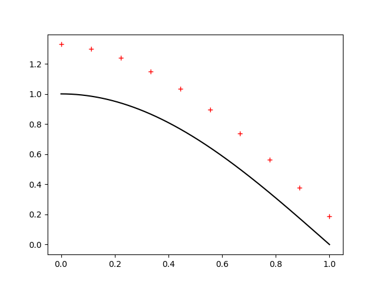
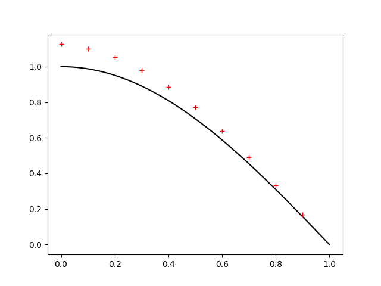
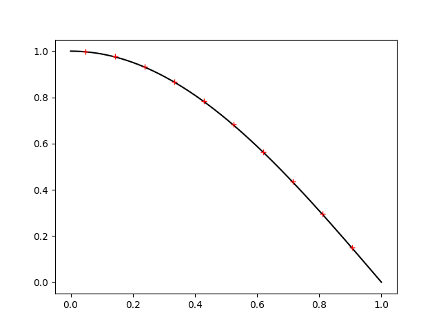
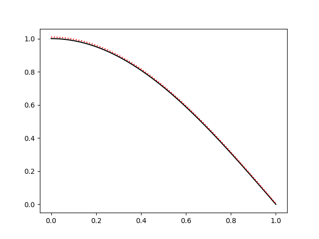

Suppose we want to numerically take the derivative of a function \(f\), in either functional form or as a list of evenly spaced values. For example, we might have \(f(x) = cos(x)\) and we want to represent is as an array \(F\) of length \(n\) in the range \([0, 1]\), we could define
$$\Delta x=\frac{1 - 0}{n - 1}$$
and let $$F[k] = f(0 + k\Delta x)\hspace{3ex}\forall k\in\{0,1,\dots,n-1\}.$$
Perhaps the most obvious thing to is to just use the definition of the derivative as our model, so, since
$$f'(x)=\lim_{h\rightarrow0}\frac{f(x+h)-f(x)}{h},$$ we can define $$F'[i] = \frac{F'[i+1]-F'[i]}{\Delta x}$$
Of course, it would have been equally valid to think of \(h\) as a negative value approaching 0. Thinking of it this way, we might write the derivative as
$$F'[i] = \frac{F'[i]-F'[i-1]}{\Delta x}$$
Graphically, we'd represent this as

Where the black curve is a segment of the plot of \(cos(x)\), the dashed redline is the linear approximation of \(cos(x)\) at 0.2 using the "forward" approximation of the derivative, and the dashed blue line is the linear approximation using the "backward" approximation of the derivative.
In the image, however, we can see that one approximation overshoots and the other undershoots the true value of the derivative. If we look at the first fewterms of the taylor series of \(f\),
$$f(x+h) = f(x) + f'(x)h + \frac{f''(x)}{2}h^2 + \dots$$
So the leading error in our approximation of \(\frac{f(x+h)-f(x)}{h}\) is \(\frac{f''(x)}{2}h\). This means that, unless we're looking at an inflection point (where \(f''(x)=0\)), the forward and backward approximations will err on opposite ends of the true derivative.
This suggests that the average of the two approximations would be better:
$$\frac{ \frac{f(x+h)-f(x)}{h} + \frac{f(x)-f(x-h)}{h} }{2} = \frac{f(x+h)-f(x-h)}{2h}.$$
Looking at the graphed results, we definitely see a big improvement:

Here, the (now dotted) red and blue lines are the same, but not the green lines have the new averaged or "centered" slope, with the dotted green line being the cord connecting \(f(x-h)\) and \(f(x+h)\), and the dashed green line being the same cord translated to intersect \((x, f(x))\).
We can get a more rigorous explanation for this improvement by looking at the Taylor series of this new approximation:
$$\begin{align*} f(x+h) - f(x-h) &= f(x) + f'(x)h + \frac{f''(x)}{2}h^2 + \frac{f'''(x)}{6}h^3 +\dots\\ &- f(x) + f'(x)h - \frac{f''(x)}{2}h^2 + \frac{f'''(x)}{6}h^3 - \dots\\ &= 2f'(x)h + \frac{f'''(x)}{3}h^3 + \dots\end{align*}$$
So $$\frac{f(x+h) - f(x-h)}{2h} = f'(x) + \frac{f'''(x)}{6}h^2 + \dots$$
Now, our error is \(O(h^2)\) (rather than \(O(h)\)), which is a good improvement! So it's better to approximate our derivative as
$$F'[i] = \frac{F[i + 1] - F[i - 1]}{2h}$$
than as a simple forward or backward approximation.
It'' be convenient at this point to not that we can represent these finite difference approximations of the derivative as a matri. This should almost be expected, considering differentiation is a linear operator and how all lineaer functions on finite vector spaces can eb represented as matrices.
By considering its action, the forward difference \(f(x+h)-f(x)\) can be represented by the nxn matrix (with n = 7 here)
$$\Delta_+ \equiv \left[\begin{array}{rr}-1&1&0&0&0&0&0\\0&-1&1&0&0&0&0\\0&0&-1&1&0&0&0\\0&0&0&-1&1&0&0\\0&0&0&0&-1&1&0\\0&0&0&0&0&-1&1\\0&0&0&0&0&0&-1\end{array}\right],$$
the backward difference \(f(x)-f(x-h)\) as
$$\Delta_- \equiv \left[\begin{array}{rr}1&0&0&0&0&0&0\\-1&1&0&0&0&0&0\\0&-1&1&0&0&0&0\\0&0&-1&1&0&0&0\\0&0&0&-1&1&0&0\\0&0&0&0&-1&1&0\\0&0&0&0&0&-1&1\end{array}\right],$$
and the centered difference \(f(x+h) - f(x-h)\) as
$$\Delta_0 \equiv \left[\begin{array}{rr}0&1&0&0&0&0&0\\-1&0&1&0&0&0&0\\0&-1&0&1&0&0&0\\0&0&-1&0&1&0&0\\0&0&0&-1&0&1&0\\0&0&0&0&-1&0&1\\0&0&0&0&0&-1&0\end{array}\right],$$
where we divide by the appropriate spacing (\(\frac1h\Delta_-\), \(\frac1h\Delta_+\), \(\frac1{2h}\Delta_0\)) to use it as a derivative.
You might have noticed that the bottom row of \(\Delta_+\) and the top row of \(\Delta_-\) don't fit the pattern set y the rest of the rows. If you're worried this is an artifact of our matrix representation, worry not as these anomalies were present in our algebraic representation as well. For example, what value do you use for \(f(x-h)\) when we only have defined \(f\) on values greater than x?
We can still consider the implications though. By simply truncating the matrices at some finite size, we are implicity assuming that \(f(x)=0\) outside of our interval.
Of course, if we are approximating our derivatives as finite differences which can be represented as matrices, it's easy to consider how we might take a second derivative. Just apply our finite differences twice!
But which ones? We get difference answers depending on our order:
$$\Delta_+\Delta_+ = \left[\begin{array}{rr}1&-2&1&0&0&0&0\\0&1&-2&1&0&0&0\\0&0&1&-2&1&0&0\\0&0&0&1&-2&1&0\\0&0&0&0&1&-2&1\\0&0&0&0&0&1&-2\\0&0&0&0&0&0&1\end{array}\right]$$
$$\Delta_-\Delta_- = \left[\begin{array}{rr}1&0&0&0&0&0&0\\-2&1&0&0&0&0&0\\1&-2&1&0&0&0&0\\0&1&-2&1&0&0&0\\0&0&1&-2&1&0&0\\0&0&0&1&-2&1&0\\0&0&0&0&1&-2&1\end{array}\right]$$
$$\Delta_+\Delta_- = \left[\begin{array}{rr}-2&1&0&0&0&0&0\\1&-2&1&0&0&0&0\\0&1&-2&1&0&0&0\\0&0&1&-2&1&0&0\\0&0&0&1&-2&1&0\\0&0&0&0&1&-2&1\\0&0&0&0&0&1&-1\end{array}\right]$$
$$\Delta_-\Delta_+ = \left[\begin{array}{rr}-1&1&0&0&0&0&0\\1&-2&1&0&0&0&0\\0&1&-2&1&0&0&0\\0&0&1&-2&1&0&0\\0&0&0&1&-2&1&0\\0&0&0&0&1&-2&1\\0&0&0&0&0&1&-2\end{array}\right]$$
They all display a common 1, -2, 1 pattern, but you might notice that while this pattern is centered on the diagonal for \(\Delta_-\Delta_+\) and \(\Delta_+\Delta_-\), it is not for \(\Delta_+\Delta_+\) and \(\Delta_-\Delta_-\). These latter two correspond to to
$$\frac{f(x+2h)-2f(x+h)+f(x)}{h^2}\hspace{3ex}\text{and}\hspace{3ex}\frac{f(x)-2f(x-h)+f(x-2h)}{h^2}.$$
While these are both approximations of \(f''(x)\), they both have \(O(h)\) error. The cenetered version, \(\frac{f(x+h)-2f(x)+f(x-h)}{h^2}\), as seen in \(\Delta_-\Delta_+\) and \(\Delta_+\Delta_-\), has \(O(h^2)\) error. Fundamentally, this is because we have equal contributions for \(f(x + h)\) and \(f(x - h)\); the odd terms of their Taylor series' canel out (as \(h^3 + (-h)^3 = 0\)). You might remember this from our examination of the centered difference earlier.
But what do we make of the -1 terms in the corners of \(\Delta_-\Delta_+\) and \(\Delta_+\Delta_-\)? Given that the terms are on the boundries of the matrices, we can think of them as boundry conditions. To elaborate, suppose we have a differential equation \(\frac{d^2u}{dx^2}=f\). We could try solving this by representing \(\frac{d^2}{dx^2}\) as a second finite difference on an interval \([a, b]\). For example
$$\frac{1}{h^2}\Delta_+\Delta_-U=F$$
where \(U\) is the vectorized representation of our unknown \(u\) and \(F\) of our driving function \(f\). If we assume that \(u(a-h)=0\),
$$\frac{u(a+h)-2u(a)+u(a-h)}{h^2}=\frac{u(a+h)-2u(a)}{h^2},$$
which corresponds to \(\Delta_+\Delta_-\)'s top-left corner.
Conversely, if we assume \(u'(a)=0\), then for sufficiently small \(h)\), \(u(a)\approx u(a-h)\), so
$$\frac{u(h+h)-2u(a)+u(a-h)}{h^2} = \frac{u(a+h)-u(a)}{h^2},$$
which corresponds to the top left corner of \(\Delta_-\Delta_+\).
This means our choice between \(\Delta_-\Delta_+\) and \(\Delta_+\Delta_-\) is not arbitrary, and we might choose neither. Instead we set the top and bottom rows by considering our boundary conditions. Consider, for example, a periodic boundary condition where \(u(a-h)=u(b)\) and \(u(b+h)=u(a)\). Then the appropriate difference to approximate the second derivative would be
$$\left[\begin{array}{rr}-2&1&0&0&0&0&1\\1&-2&1&0&0&0&0\\0&1&-2&1&0&0&0\\0&0&1&-2&1&0&0\\0&0&0&1&-2&1&0\\0&0&0&0&1&-2&1\\1&0&0&0&0&1&-2\end{array}\right].$$
You might have wondered why we considered only products of \(\Delta_-\) and \(\Delta_+\), neglecting \(\delta_-\) despite its better error margin. This is because products of \(\Delta_0\) are "wider" so to speak. For example
$$\Delta_0\Delta_0=\left[\begin{array}{rr}-1&0&1&0&0&0&0\\0&-2&0&1&0&0&0\\1&0&-2&0&1&0&0\\0&1&0&-2&0&1&0\\0&0&1&0&-2&0&1\\0&0&0&1&0&-2&0\\0&0&0&0&1&0&-1\end{array}\right]$$
but this is just like our 1, -2, 1 pattern from before, except with a step size of \(2h\) rather than \(h\). Consequently, it still only has a \(O(h^2)\) error, yet now our boundary conditions are affecting the second and penultimate rows as well, which is not something we want under ordinary circumstances.
It's even worse for the other products, since \(\Delta_0\Delta_+\), \(\Delta_+\Delta_0\), \(\Delta_0\Delta_-\), \(\Delta_-\Delta_0\) aren't symmetric, and thus don't cancel out the odd ordered terms of their corresponding Taylor expansions, resulting in only \(O(h)\) errors.
If, however, we don't mind wider rows, we can get a better approximation of \(\frac{d^2}{dx^2}\) with \(O(h^4)\) error by choosing our coefficients more intelligently. By balancing our \(+h\) and \(-h\) terms, we can eliminate the odd terms of the Taylor series', but to eliminate higher order even terms, we need to introduce additional evaluation points frther from \(x\). For example, the degree 4 term of \(f(x+h)\) is \(\frac{f^{(4)}(x)}{24}h^4\), whereas the degree 4 term of \(f(x+2h)\) is \(\frac{16f^{(4)}(x)}{24}h^4\).
Hence \(16f(x+h) - f(x+2h)\) will have no \(4^{th}\) degree term. We add their complements to cancel out the odd dgree terms,
$$-f(x+2h)+16f(x+h)+16f(x-h)-f(x-2h),$$
and then subtract out the uncancelled copies of \(f(x)\) to elimante the constant term:
$$-f(x+2h)+16f(x+h)-30f(x)+16f(x-h)-f(x-2h).$$
Of course, I've done nothing to ensure our answer is normalized, so, checking the value of the second order term:
$$\left(-\frac{4f''(x)}{2}h^2+16\frac{f''(x)}{2}h^2\right)\times 2\text{ (from the x-h, and x-2h terms)}$$
gives \(12h^2f''(x)\), we just divide the whole difference by \(12h^2\) to get the second derivative with \(O(h^4)\) error:
$$\frac{-f(x+2h)+16f(x+h)-30f(x)+16f(x-h)-f(x-2h)}{12h^2}=f''(x)+O(h^2).$$
If you don't believe me, just expand out the Taylor series and check for yourself.
Let's take a look at finite differences in action. We'll solve a differential equation whose analytical solution we know, both so we can confirm our solution and so it will be easier to explore the effects of our boundary conditions. Namely, let's solve for \(u\) in
$$-\frac{d^2u}{dx^2}(x)=\left(\frac\pi2\right)^2\cos\left(\frac\pi2x\right)$$
with boundary conditions \(u'(0)=0\), \(u(1)=0\). Ignoring the boundary conditions, the most general solution to this equation if \(\cos\left(\frac\pi2x\right)+Ax+b\). The boundary conditions for both \(A\) and \(B\) to be 0. So our analytical solution is \(\cos\left(\frac\pi2x\right)\).
The most straight forward thing to do, if we wish to evaluate our approximation at n points, is to evenly space our approximation points on \([0, 1]\) with a spacing of \(h=\frac1{n-1}\), then approximate \(-u''(x)\) as \(\frac{-u(x-h) + 2u(x) - u(x+h)}{h^2}\).
Recallling that our discretization forces us to pick our boundary conditions at this stage, we choose the top left corner to be 1 and the bottom right to be 2 since \(u'\) is 0 on the left and \(u\) is 0 on the right. This corresponds to \(-\Delta_-\Delta_+\) from our revious discussion, but we'll denote it as \(T\) (for top, since the top row has a 1 on the diagonal rather than a 2):
$$-\frac{d^2}{dx^2} \sim T = \left[\begin{array}{rr}1&-1&0&0&0&0&0\\-1&2&-1&0&0&0&0\\0&-1&2&-1&0&0&0\\0&0&-1&2&-1&0&0\\0&0&0&-1&2&-1&0\\0&0&0&0&-1&2&-1\\0&0&0&0&0&-1&2\end{array}\right].$$
Note, \(T\) is an nxn matrix, yet only has \(3n-2\) non-zero netires. If n is reasonably large, it's important to represent \(T\) in your software as a sparse matrix so as to save on the cost of storing, accessing, and operating on values we already know to be zero.
If we represent \(\left(\frac\pi2\right)^2\cos\left(\frac\pi2x\right)\) (which I'll simply denote by \(f\)) as the vector \(F\), where \(F[i] = f(ih)\), and the let the vector \(U\) be our approximation of \(u\), then our discretized equation becomes
$$TU=F$$
We know this equation is always solvable because \(T\) is invertible. To see that it is, note that
$$\det(T)=\det(-\Delta_-\Delta_+)=\det(\Delta_-)\det(-\Delta_+).$$
\(\Delta_-\) and \(-\Delta_+\) are easy to take the determinant of because there is only one traersal of their rows and columns with no repeats which doesn't intersect any zeros, and that is just the ones on the diagonal, so each plainly has a determinant of 1. Thus \(\det(T)=1\), i.e., \(T\) is invertible.
Of course, to solve \(TU=F\), we don't compute \(T\) inverse. It's cheaper to instead use a technique like LU decomposition and to then solve for \(U\) by forward and backward substitution.
The following discussion just explains why \(T\) meets the conditions for Cholesky decomposition and can be skipped.
If, however, \(T\) is symmetric and positive definite, we can use Cholesky decomposition, which is an even cheaper way of solving for \*U\). Obviously \(T\) is symmetric, but is it positive semidefinite?
Plausibly. It's symmetric, so if all its eigenvalues are positive it is positive definite. Note, this follows because, by the real spectral theorem, we can find an orthonormal basis of eigenvectors for real symmetric matrices. Let \(\{e_i\}\) be such a basis with positive eigenvalues \(\lambda_i\in\mathbb{R}\). If \(x\in\mathbb{R}^n\) is a nonzero vector, \(\exists\alpha_i\in\mathbb{R}\) not all zero s.t. \(x=\sum_{i}\alpha_i e_i\), and so
$$\begin{align*}x^\top Tx&=\left(\sum_i\alpha_i e_i\right)^\top T\left(\sum_j\alpha_j e_j\right)\\ &=\sum_{i,j}\alpha_i\alpha_j e_i^\top Te_j\\ &=\sum_{i,j}\alpha_i\alpha_je_i^\top\lambda_je_j\\ &= \sum_i\alpha_i^2\lambda_i > 0\end{align*},$$
implying \(T\) is positive definite.
So, does \(T\) have positive eigenvalues? Turns out it does, and we can easily see this by applying the Gershgorin Circle Theorem.
Before stating the theorem, I think it would be helpful to explain the idea. Suppose we have a matrix \(A\) whose eigenvalues we'd like to know. If \(A\) were diagonal (or triangular), we'd be able to just read off the eigenvalues from the diagonal. But assume we don't have that luxury. Suppose, however, that \(A\) were almost diagonal, i.e., the off-diagonal elements are small relative to the diagonal element on their same row. One might think that since the matrix is almost diagonal (except for a relatively small perturbation), its eigenvalues can't be too far from the diagonal entries.
After all, suppose \(v\) is an eigenvector with some largest element \(v_i\). If the diagonal \(A_{ii}\) dominates in absolute value the other elements of the \(i^{th}\) row, the action of \(A\) on \(v\) at the \(i^{th}\) entry will be dominated by the product \(A_{ii}v_i\). Since \(v\) is an eigenvector with some eigenvalue \(\lambda\), we know the action of \(A\) on \(v_i\) is just \(\lambda v_i\). This means that if \(A_{ii}\) is large compared to the rest of its row, then \(\lambda\) should be close in value to \(A_{ii}\).
Of course, we don't actually know which component of an unknown eigenvector is largest, so all we can really say is that \(\lambda\) is close to at least one of the diagonals, with the range determined on a row by row basis by the sizes of the other entries.
With that out of the way, let's dicuss the theorem:
Theorem: Let \(A\) be an nxn complex matrix. Let \(R_i=\sum_{j\neq i}|A_{ij}|\). If \(\lambda\) is an eigenvalue of \(A\), then \(|\lambda-A_{ii}|\leq R_i\) for some \(i\in\{1,\dots,n\}\).
Proof: Let \(v\) be an eigenvector of \(A\) whose eigenvalue if \(\lambda\). Let \(v_i\) be the component of \(v\) with largest absolute value so that \(|v_j|\leq |v_i|\hspace{1ex}\forall j\). Note, \(v_i\neq0\), as if it were zero, that would imply that \(v=0\), contradicting our assumption that \(v\) is an eigenvector.
Now, $$\lambda v_i=(Av)_i=\sum_{j=1}^nA_{ij}v_j\text{, so}\hspace{3ex}\lambda-A_{ii}=\frac1{v_i}\sum_{j\neq i}A_{ij}v_j,$$
so $$|\lambda - A_{ii}| = \frac1{|v_i|}\left|\sum_{j\neq i}A_{ij}v_j\right|\leq\frac1{|v_i|}\sum_{j\neq i}|A_{ij}||v_j|\leq\frac1{|v_i|}\sum_{j\neq i}|A_{ij}||v_i|=\sum_{j\neq i}|A_{ij}|=R_i,$$
as claimed. \(\blacksquare\)
The reason this is now useful is, looking at \(T\), we see this then implies all eigenvalues are in the interval \([0, 4]\). However, since \(T\) is invertible, none of its eigenvalues are 0, and so we know \(T\)'s eigenvalues are in the interval \((0, 4]\), i.e., are all positive. Hence \(T\) is positive definite and we can use cholesky decomposition
End of digression
Anyway, solving for \(U\) and plotting the results (with our dimension \(n=10\)), we get
The black solid line is the xact solution, while our approximated solution is given by the red crosses.
Clearly, something has gone wrong! While the general shape is right, it is too high!
Of course, herein lies the clue. The shape is determined by the differential equations. Since that looks right, it must be our boundary conditions which are problematic.
The more obviously troublesome boundary condition is at 1, where out solution should be interspecting the x axis. So let's examine how we represent out boundary condition here: by truncating the matrix, losing the last row's second -1, we are implicitly assuming
$$\frac{u(1-h)-2u(h)+u(1+h)}{h^2}=\frac{u(1-h)-2u(h)}{h^2},$$
i.e., that \(0=u(1+h)=u(1)+u'(1)h+O(h^2)\), i.e., to first order, \(u(1)=-u'(1)h\). Knowing that for the exact solution, \(u'(1)=-\frac\pi2\cos\left(\frac\pi2\right)=-\frac\pi2\), the elevated value on the right is well explained by this error. Now, while this becomes our desired boundary condition in the limit as \(h\rightarrow 0\), this is not quite what we want. We can resolve this, however, by changing the range on which we evaluate \(U\) from \([0, 1]\) to \([0, 1-h]\), so that our truncation matches our boundary condition exactly. To do this, we still set our start at 0, but we want our step size \(h\) to be such that
$$1-h=(n-1)h\text{,}\hspace{3ex}\text{i.e.,}\hspace{3ex}h=\frac1n.$$
When we substitue this new spacing (both for plotting and definite \(F[i]=f(ih)\)), we get
Much better! But evidently we didn't handle our boundary condition at 0 well either. So let's give it the same treatement and see what we implicitly assumed in the form of \(T\):
$$\frac{u(-h)-2u(0)+u(h)}{h^2}=\frac{-u(0)+u(j)}{h^2},$$
i.e., that $$u(0)=u(-h).$$
While this isn't as straight forward of a situation as our other boundary condition, we can still handle it. This statement is only true insofar as \(u'(0)=\frac{u(0)-u(-h)}{h}\). But, in reality
$$\frac{u(0)-u(-h)}h = u'(0) + \frac{u''(0)}{2}h + O(h^2).$$
So, saying \(u(0)=u(-h)\) is not saying that \(u'(0)=0\), but rather that $$u'(0) = \frac{u''(0)}{2}h.$$
This checks out as substituting in our known value for \(u''(0)\) (knowing that \(-u''(x)=(\pi/2)^2\cos\left(\frac\pi2x\right)\)), we get that our effective boundary condition is
$$u'(0)=\frac{u''(0)}{2}h=-\frac{\pi^2}{8}h,$$
implying we have a negative slope at 0, which is, in fact, what we see.
Now, while this approximation of the boundary condition is good in the limit as \(h\rightarrow 0\), it's evidently causing us problems and we can do better.
Namely, recall that the centered difference is a better approximation of the derivative than the backward difference. So suppose instead that we implicitly assumed
$$0=\frac{u(h/2)-u(-h/2)}h = u'(0) + \frac{u'''(0)}{24}h^2 + O(h^4).$$
This is instead saying that, to lowest order, $$u'(0)=-\frac{u'''(0)}{24}h^2,$$
which is a much better approximation of 0 for small enough \(h\)!
To check that this actually helps, we redo our interval to now start not at 0 but at \(\frac h2\), so that
$$1-h-\frac h2 = (n-1)h\text{,}\hspace{3ex}\text{i.e.,}\hspace{4ex}h=\frac1{n+\frac12}.$$
Using this new value for plotting and calculating F (\(F[i]=f(h/2 + ih)\), we instead get
which is so good we can't even see the error at this level of zoom!
Note, while we saw that both of our naive boundary condition implementations were good in the limit as \(h\rightarrow 0\), which is in fact what we see below (\(n=300\)):
the approximation is still visibly worse (particularly between 0 and .2) with 300 points than our adjusted solution was with 10 points. Note, for this figure I plotted the data as a dotted line rather than as individual points. Also, while for larger values of \(n\) the approximated solution is indistinguishable from the exact solution, I chose \(n=300\) to illustrate that not even 30 times the number of points is sufficient to match the improved implementation.
Note also that our improvements were made on the basis of considering \(u\)'s generic Taylor series, and so our improvements should also be effective in the general case as well.
This exericse has show that by just putting in a little extra care into how we set our boundary conditions, we can get much better approximations much more quickly.